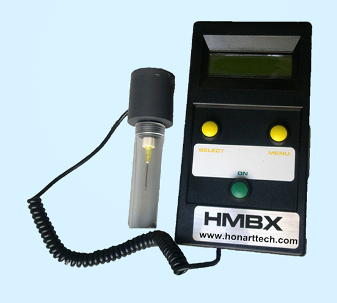

ATP 荧光检测仪使用和评价
手持ATP仪比台式ATP仪更适合现场快速检测
为了满足现场快速检测的需求，ATP荧光检测仪宜选择手持ATP荧光检测仪（也叫手持式ATP荧光检测仪,而实现流动状态即时检测,因为尽管大型的台式ATP荧光检测仪在灵敏度方面可能优于手持式ATP仪，但它只能在实验室状态下使用，不利于餐饮服务、医疗感控等流动场所现场检测。国外ATP检测技术从上世纪90年开始研究，发展至今有了长足的进步和发展ATP检测技术实验结果准确可靠, 值得信赖。美国多个专业权威机构研究了1000个以上的样品,这种只需十几秒就能完成检测的快速检测法所得实验结果90%以上与24-48小时标准细菌培养法/平皿法所得结果一致。测试饮用水时, 比标准法灵敏度大100倍以上，样品量只要传统方法的1/100。本产品测定结果与传统细菌培养法所得结果相比,相关性高达92-98%。加拿大食品监查协会经过比对实验后发现，本产品测定结果与标准培养法的相关性是98%。美国FDA推荐使用ATP检测系统和试剂盒用于牛奶细菌数的快速检测。首届中美食品安全及其全程控制研讨会暨微生物快速自动检测技术培训班也将ATP快速检测技术作为培训内容之一。在巴西召开的第11届世界灭菌大会暨第7届国际灭菌与医院感染控制论坛，与会专家做了ATP方法用于清洗效评价的研究报告，结论是该方法效果和标准培养法基本一致，所以在许多国家“医用清洁评价”相关标准中，ATP方法被列入作为评价手段之一。通过应用和评估，美国CDC制定的《医疗机构消毒灭菌指南2008》也将ATP方法作为评价内镜清洗或内镜处理效果的新 方法。
近几年来国内由于应用需求牵引，优势单位在研制出了具有自主知识产权的手持ATP 荧光检测仪和ATP试剂并在多个领域的到成功应用。
中国CDC有研究证实，ATP检测结果与不同浓度的大肠杆菌、金黄色葡萄球菌和血液成直线相关。通过ATP方法对细菌检测和表面洁净度检测的应用和技术评估，ATP荧光检测仪已成为中国卫 生监督和中国食品药品监督官方部门指定的卫生监督和食品安全相关的专用检测设备，被国家指定用于食品加工、储存运输、贸易、餐饮服务以及医疗系统物体表面及操作人员手等表面洁净度快速测 定，并且以发放政府文件的方式要求购买和配备ATP荧光检测仪和配套试剂，作为卫生监督和食品安全现场快速检测能力建设的重要举措。
主要特点/ATP荧光检测仪
本atp快速检测仪采用特殊密封性材质，提升避光性，检测结果更为精确、稳定。 界面简洁，易操作。
底部检测，不受仪器手持或放置角度的影响，检测数据不受干扰，结果更加稳定。 一体化箱式设计，为公务人员出行携带提供便利。具有显着的低背景值更有利于检测痕量 ATP。具有良好的重现性，为用户提供更可靠准确的数据。ATP荧光检测仪ATP荧光检测仪图册
金属外壳，防氧化、老化性强，增加使用年限。
相关法规/ATP荧光检测仪
GB 4789.3 食品卫生微生物学检验
GB 5749 生活饮用水卫生标准
WS/T 313医务人员手卫生规范
药品GMP认证检查评定标准国食药监安648号
中国药典2010版药品微生物检查法
卫生局餐饮服务食品安全现场快速检测设备
烧伤病房/手术病房/普通病房物体表面卫生学标准

医院感染监测规范
县级卫生监督机构现场快速检测设备装备标准（须配备ATP荧光检测仪用于餐饮具、食品加工工具、用具等物品表洁净度快速测定）餐饮服务食品安全现场快速检测设备配备基本标准须配备荧光检测仪用于餐饮具、食品加工工具、用具等物品表洁净度快速测定。
 24h 服务热线：400-0807-628
24h 服务热线：400-0807-628